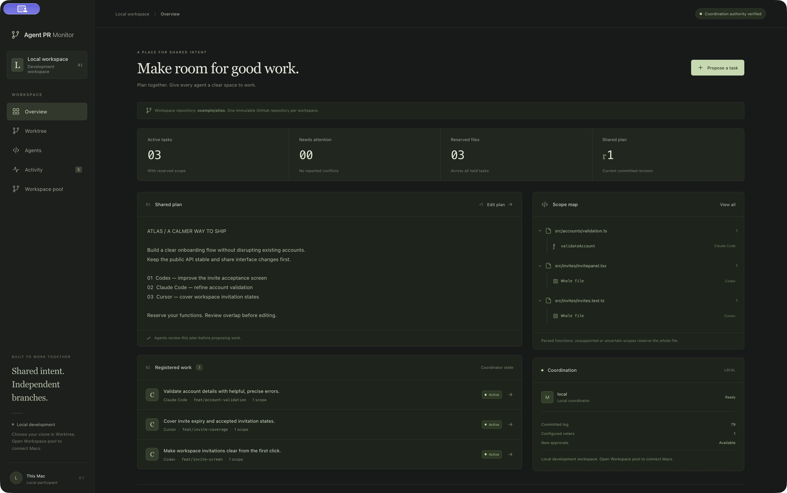

A shared plan.
Room to work.
Keep your coding agents on the same page, before their changes overlap.
Agent PR Monitor gives your sessions a shared plan, reserved files and functions, and a clear view of work moving toward merge.
{{BUILD_LABEL}} read build details
Parallel work.
A common understanding.
Each Mac keeps its own clone and branch. The workspace keeps the plan and reservations in view.
- 01 /
Bring the plan together.
Create or join a LAN workspace, select your local clone, and write the shared plan. Every session starts from the same intent.
- 02 /
Give each agent a clear scope.
Prepare each session in Agents. Have it read the plan, inspect current work, and reserve the files or functions it intends to change.
- 03 /
Follow the work through.
See overlaps before proceeding, revise scope when plans change, and link existing pull requests. Reservations remain until the release conditions are met.
Give your agent
the field guide.
The app coordinates the work. The skill teaches your agent how to take part: read the plan, propose a scope, handle conflicts, and finish responsibly.
- 1.
Install the guide. Unzip it into your agent client’s skills directory, keeping the
agent-pr-monitorfolder intact. For other clients, supply the Markdown as project instructions. - 2.
Connect the session. Open Agents in the app and review the generated MCP and hook setup for that session. The skill works alongside this setup.
- 3.
Start with the plan. Ask your agent to use the skill before it begins editing.
Use the Agent PR Monitor skill. Read the shared plan, check current tasks and the repository, then register the exact files or functions you intend to change before editing.
Make room
for better teamwork.
Download the app, bring your agents, and start with a shared plan.
Agent PR Monitor
macOS · Apple Silicon · v{{VERSION}}
Ad-hoc signed development build. Developer ID signing, notarization, and the full device/client qualification are still in progress.
Verify the download
A few useful details.
Which Macs can run this build?
This download targets Apple Silicon and declares macOS 15 or later. The packaged build has been run on the development Mac with macOS 27; macOS 15/26 and physical multi-Mac qualification remain open. An Intel build is not included.
How do I install it?
Open the DMG and drag Agent PR Monitor into Applications. This build is ad-hoc signed and is not notarized, so macOS may block its first launch. Review the release and inspection details before deciding whether to allow this development app through macOS Privacy & Security.
Which agent integrations are available?
The app includes development adapters for Codex, Claude Code, Cursor IDE Agent, and OpenCode. Agents provides reviewable setup for each session. Actual-client hook enforcement and failure behavior still need qualification; an adapter is not a guarantee that every client surface is covered.
The gates cover specific native tool paths. Arbitrary shell and delegation are refused, Codex patches require whole-file scope, and Cursor CLI and Tab are not qualified. The skill explains these boundaries.
Does the app run agents or merge pull requests?
You run the agent sessions. Agent PR Monitor coordinates their proposed work and observes local Git and GitHub state. It does not launch model sessions, commit, push, open pull requests, or merge them.
Can agents keep working when disconnected?
An already accepted task can continue within its reserved scope when the session has a valid signed offline receipt. New tasks and scope changes require current coordination authority. An unreachable Mac learns about remote stops when it reconnects.
Does the skill replace the app’s integration setup?
The skill provides workflow instructions. Each actual agent session still needs the app’s generated MCP and hook setup, reviewed and trusted in its client. Keep private endpoint files, session files, and bearer credentials out of prompts and shared repositories.